Elektrische Gefährdung
Eine elektrische Gefährdung beginnt, wenn:
Daher muss eine erste Schutzmaßnahme als Basisschutz (z. B. Isolierung) umgesetzt werden.
Zulässige Berührungsspannung
Die zulässige Berührungsspannung wird überschritten:
Von diesen Werten an wird die Körperdurchströmung für den Menschen so gefährlich, dass irreversible Schäden auftreten können. Zusätzlich zum Basisschutz muss eine zweite Schutzmaßnahme als Fehlerschutz (z. B. Schutztrennung) umgesetzt werden.
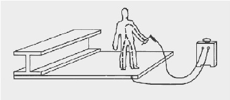
Abb. 3-1 Längsdurchströmung eines menschlichen Körpers
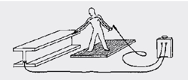
Abb. 3-2 Querdurchströmung eines menschlichen Körpers
Körperdurchströmung
Strom fließt nur in einem geschlossenen Stromkreis. Die Stromstärke (I) in Ampere [A] ist von der Spannung (U) in Volt [V] und von der Größe des Widerstands (R) in Ohm [Ω] abhängig.
Bei konstanter Spannung ist die Stromstärke allein von der Größe des Widerstands abhängig. Wenn der Widerstand gegen Null geht, steigt die Stromstärke gegen unendlich (Kurzschluss). Der Zusammenhang wird anhand des Ohmschen Gesetzes erkennbar:
I = U/R
Für den Menschen besteht dann Gefahr, wenn er selbst ein Teil des Stromkreises wird. Der Strom durchfließt den menschlichen Körper auf kürzestem Weg. Sollte die Verbindung mit dem Stromkreis z. B. über beide Hände gegeben sein, durchfließt der Strom die Hände, die Arme, den Oberkörper und damit lebenswichtige Organe wie das Herz.
Mit den durchschnittlichen Widerständen des menschlichen Körpers und mit der Berührungsspannung, die in der Regel bekannt ist, kann die Stromstärke mit Hilfe des Ohmschen Gesetzes abgeschätzt werden.
Tabelle 1 Körperdurchströmungen bei einer Berührungsspannung von 113 Volt (maximal zulässige Spannung im Schweißstromkreis)
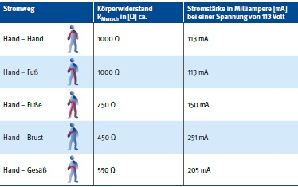
Körperdurchströmungen können folgende Auswirkungen haben:
Muskelverkrampfungen können bereits bei Stromstärken ab etwa 5 mA auftreten. Werden die Hände durchströmt, kann die Hand- und Fingermuskulatur verkrampfen, so dass mit den Händen erfasste, unter Spannung stehende Gegenstände nicht mehr losgelassen werden können (Loslassgrenze). Ist der Brustkorb betroffen, kann Atemstillstand eintreten, Herzstillstand ausgelöst werden oder der geregelte Ablauf der einzelnen Herzmuskelbewegungen wird durcheinandergebracht, so dass eine ungeordnete Bewegung ohne Pumpwirkung entsteht das sogenannte Herzkammerflimmern.
Die physiologische Wirkung von Gleichstrom bei gleicher Stromstärke ist weniger stark als die von Wechselstrom, aber keineswegs ungefährlich.
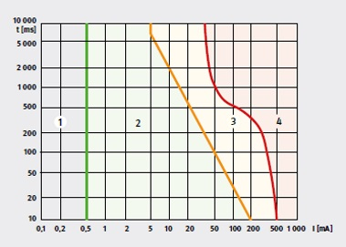
Abb. 3-3 Zeit-Stromstärke-Abhängigkeit der Auswirkungen von Wechselstrom bei Körperdurchströmung in Anlehnung an VDE V 0140-479-1
Die auftretende Stromstärke bei einer Körperdurchströmung hängt ab von:
Der Widerstand der für die Fortleitung des Schweißstroms vorgesehenen Leiter ist gegenüber den Widerständen von Körper und Bekleidung vernachlässigbar gering. Für die Sicherheit der Schweißfachkraft ist deshalb in erster Linie die Beschaffenheit der Bekleidung von Bedeutung. Der Isolationswert von Schutzkleidung beim Schweißen kann von "ausreichend hoch" bis "lebensgefährlich niedrig" schwanken. Nasse oder durchschwitzte Kleidung dagegen ist elektrisch leitfähig und hat fast keinen Widerstand. Unbeschädigtes trockenes Schuhwerk mit Gummisohlen hat einen Widerstand von ca. 100 000 Ohm und bietet eine ausreichende Isolation.
Sekundärunfälle
Schon bei geringen, für den Menschen eigentlich ungefährlichen Körperdurchströmungen unterhalb der Loslassgrenze können Schreckreaktionen auftreten, die zu gefährlichen Sekundärunfällen wie Sturz in eine Arbeitsgrube oder von einer Leiter führen können.
Bei Elektrowerkzeugen wie Bohrmaschine und Winkelschleifer sind alle unter elektrischer Spannung stehenden Teile gegen Berühren geschützt. Durch die Schutzmaßnahmen zum Basis- und Fehlerschutz besteht keine Möglichkeit, die unter Spannung stehenden Teile zu berühren.
Beim Lichtbogenschweißen dagegen können nicht alle spannungsführenden Teile isoliert werden. Kein Berührungsschutz besteht z. B. gegenüber der Schweißelektrode. Werden Elektrode und Werkstück gleichzeitig berührt, wird die Schweißspannung somit zur Berührungsspannung.
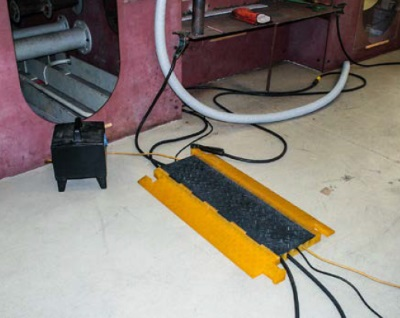
Abb. 3-4 Sicherung der Schweißleitung gegen Beschädigung beim Überfahren.
Folgende im Schweißstromkreis unter Spannung stehende Teile sind von der Grundforderung des Berührungsschutzes ausgenommen:
Damit müssen für das Lichtbogenschweißen insbesondere die in den Kapiteln 3.2.1 bis 3.2.5 beschriebenen Schutzmaßnahmen angewendet werden.
Der empfindlichste Teil der Netzseite ist die Zuleitung. Diese ist besonders gegen Beschädigungen zu schützen. Wenn beim Verändern des Aufstellungsorts der Schweißstromquelle die Netzzuleitung beschädigt werden kann, muss sie vorher vom Netz getrennt werden. Beim Verschieben ist jede Beschädigung der Leitung zu vermeiden: So können beispielsweise die Räder der Stromquelle die Leitung leicht gegen ein kantiges Profil drücken und dabei die Leitungsisolation zerstören. Hierzu reicht ein Weg von nur wenigen Zentimetern aus! Natürlich müssen Leitungen auch während des Schweißens gegen Beschädigungen –- besonders gegen Überfahren – geschützt werden.
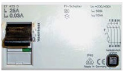
Abb. 3-5 30 mA FI-Schutzschalter – RCD (englisch: residual current protective device)
Bei längeren Arbeitsunterbrechungen müssen Schweißgeräte vom Netz getrennt werden, um Gefährdungen durch die Leerlaufspannung während dieser Zeit von vornherein unmöglich zu machen. Längere Arbeitsunterbrechungen sind z. B. auch Essenspausen und Schichtwechsel.
Ein sehr guter Schutz gegen Gefährdungen auf der Netzspannungsseite sind FI Schutzschalter (siehe Abb. 3-5) mit max. 30 mA Auslösestrom. Erkennt der FI-Schutzschalter einen Fehler, wird der dazugehörige Stromkreis vom Netz getrennt. Für moderne Schweißstromquellen (Invertertechnik) wird ein FI-Schutzschalter Typ B empfohlen.
Der Netzstrom ist zur direkten Verwendung für das Lichtbogenschweißen nicht geeignet. Die beim Lichtbogenschweißen unregelmäßig auftretenden Kurzschlüsse würden das Stromnetz erheblich stören. Zum Lichtbogenschweißen werden daher spezielle Stromquellen benötigt. Sie müssen das "Werkzeug" Strom in jeder gewünschten Form, d. h. Gleich- oder Wechselstrom, gepulst oder konstant, mit oder ohne Rampen etc., zur Verfügung stellen können. Die Bauart von Schweißstromquellen reicht damit heute vom "einfachen" Transformator bis zum computergesteuerten Typ in Inverterbauweise.
Herstellfirmen von Schweißeinrichtungen richten sich bei der Konzeption und Produktion ihrer Geräte üblicherweise nach Bauvorschriften/Normen. Die Betreibenden sollten bei ihrer Bestellung eine Geräteausführung nach der Normenreihe DIN EN IEC 60974 fordern.
Leerlaufspannung
Wenn der Lichtbogen brennt, tritt – je nach Schweißverfahren und Art der verwandten Elektrode – eine Arbeitsspannung von 15 bis 40 V auf. Wenn der Lichtbogen nicht brennt, liegt zwischen den Anschlussstellen der Schweißleitungen die Leerlaufspannung an. Sie ist wesentlich höher als die Arbeitsspannung. Die Leerlaufspannung wird benötigt, um den Lichtbogen zünden zu können. Die zulässigen Höchstwerte der Leerlaufspannung (siehe Abb. 3-6) sind für verschiedene Einsatzbedingungen so festgelegt, dass sie alle Schweißaufgaben ermöglichen, aber unnötig große Gefährdungen vermeiden. Die Höchstwerte sind für Gleich- und Wechselspannung als Scheitelwerte festgelegt. Für Wechselspannung sind zusätzlich die Effektivwerte einzuhalten.
Tabelle 2 Zulässige Höchstwerte der Leerlaufspannung
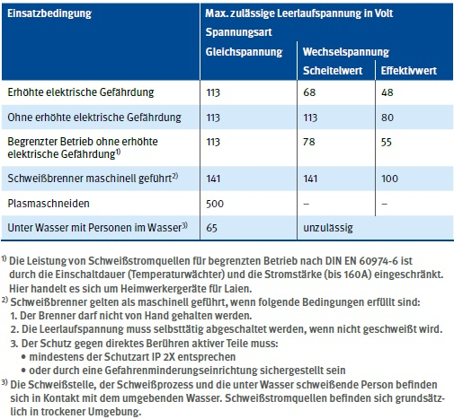
Das Einhalten der maximal zulässigen Leerlaufspannung allein bietet keine ausreichende Sicherheit. Auch bei Einhaltung dieser Spannungswerte können Unfälle mit Todesfolge bei niedrigen Widerständen im Stromweg nicht ausgeschlossen werden. Daher ist eine isolierende Ausrüstung, wie Schutzkleidung für das Schweißen, Sicherheitsschuhe, Handschuhe und eine isolierende Unterlage, zwingend erforderlich.
Auf dem Leistungsschild von Stromquellen wird der Bemessungswert der Leerlaufspannung nach DIN EN 60974-1 wie folgt angegeben:
Drahtvorschubgeräte
Wenn der Scheitelwert der Leerlaufspannung 75 V und – bei Wechselspannung – zusätzlich den Effektivwert 50 V überschreiten kann, müssen die Schweißdrahthaspel und die übrigen unter Schweißspannung stehenden Teile gegen zufälliges Berühren geschützt sein.
In Verbindung mit Schweißstromquellen für maschinell geführte Schweißbrenner, bei denen die Leerlaufspannung selbsttätig abgeschaltet wird, ist kein Berührungsschutz erforderlich.
Drahtvorschubgeräte, die kein gemeinsames Gehäuse mit der Schweißstromquelle haben, müssen deutlich erkennbar und dauerhaft mit der Art der Antriebsspannung und der vorgesehenen Leerlaufspannung gekennzeichnet sein.
Die Schweißstromrückleitung muss direkt und übersichtlich geführt sein und gut leitend am Werkstück oder an der Werkstückaufnahme angeschlossen werden. Stahlkonstruktionen, Gleise, Rohrleitungen, Stangen und Ähnliches dürfen nicht zur Rückleitung des Schweißstromes verwendet werden.
Nicht nur dem Menschen kann ein unbeabsichtigter Stromfluss schaden. Auch Bauteile und Leitungen können durch vagabundierende Schweißströme beschädigt werden. Oftmals sind z. B. Schutzleiter von Motoren an Kranen und Bearbeitungsstationen und an handgeführten Arbeitsmitteln sowie leitfähige Trag- und Anschlagmittel betroffen, da diese nicht für die großen Schweißströme ausgelegt sind. Vagabundierende Schweißströme können auftreten, wenn die Werkstücke geerdet sind oder während des Schweißens mit Elektrowerkzeugen der Schutzklasse I (mit Schutzleiteranschluss) in Berührung kommen und Fehler im Schweißstromkreis vorliegen (Abb. 3-6). Bei unsachgemäßem Anschluss der Schweißstromrückleitung kann Schweißstrom über den Schutzleiter fließen und ihn zerstören. Deshalb ist anzustreben, die Antriebsmotoren an Vorrichtungen und Absaugtischen soweit wie möglich isoliert anzubauen oder die Schutzmaßnahme "Schutztrennung" zu verwenden, um den Schutzleiter völlig getrennt vom Schweißstromkreis halten zu können.
Vagabundierende Ströme können auftreten, wenn der Schweißstromrückleitungsanschluss am Werkstück fehlt oder der Stabelektrodenhalter oder Schweißbrenner nicht isoliert abgelegt werden.
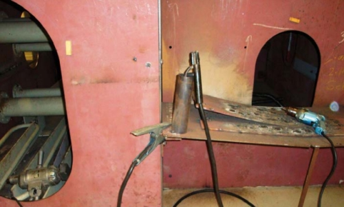
Abb. 3-6 Elektrowerkzeuge der Schutzklasse I (mit Schutzleiteranschluss) mit Schweißwerkstücken
Schweißen mehrere Schweißerinnen und Schweißer mit mehreren Stromquellen an einem Werkstück oder an mehreren elektrisch leitend miteinander verbundenen Werkstücken, so können unzulässig hohe Berührungsspannungen auftreten. Wenn Schweißstromquellen und Zusatzgeräte oder mehrere Schweißstromquellen zusammengeschaltet sind, gilt die resultierende Spannung als Leerlaufspannung. Sie darf bei keiner Einstellung und Schaltung von Stromquellen und Zusatzgeräten die festgelegten Höchstwerte der Leerlaufspannung überschreiten.
Bei Anlagen mit mehreren zusammengeschalteten Stromquellen darf weder die Leerlaufspannung der einzelnen Stromquelle noch die resultierende Leerlaufspannung aller zusammengeschalteten Geräte die zulässigen Höchstwerte überschreiten.
Rückspannung am gezogenen Netzstecker
Am gezogenen Netzstecker einer Stromquelle kann eine gefährliche Rückspannung in Größenordnung der Netzspannung auftreten, wenn die Stromquelle durch ihre Schweißleitungen mit einer eingeschalteten Stromquelle in Reihe oder parallel geschaltet ist.
Summenspannung zwischen zwei Stabelektrodenhaltern bzw. Schweißbrennern
Bei Reihenschaltung summieren sich die Leerlaufspannungen der Stromquellen. Dadurch kann zwischen zwei Stabelektrodenhaltern oder Schweißbrennern eine Spannung bis zur doppelten Leerlaufspannung auftreten. Da dieser Fall nicht ohne weiteres zu erkennen ist, dürfen schweißende Personen nicht gleichzeitig zwei Stabelektrodenhalter oder Schweißbrenner anfassen.
Den Einfluss von Stromart, Netzanschluss und Polung auf die Summe der Schweißspannungen zwischen zwei Stabelektrodenhaltern oder Schweißbrennern zeigen folgende Beispiele:
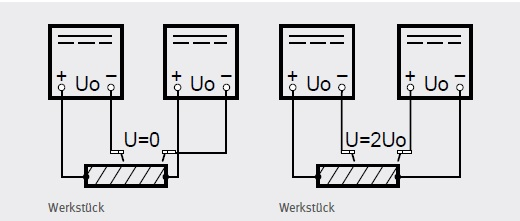
Abb. 3-7 Einfluss der Polung von Gleichstromquellen auf die Summenspannung. Die zum Schweißen gewählte Polung ist schweißtechnisch bedingt.
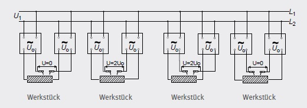
Abb. 3-8 Einfluss der Sekundärpolung von Wechselstromquellen mit Netzanschluss an gleichen Phasen auf die Summenspannung
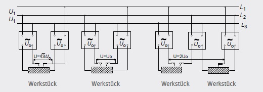
Abb. 3-9 Einfluss der Sekundärpolung von Wechselstromquellen mit Netzanschluss an verschiedenen Phasen auf die Summenspannung
Gleichstrom
Der Netzanschluss ist ohne Einfluss auf die Summe der Schweißspannungen. Wenn gleichzeitig mit verschiedener Polung geschweißt wird, summieren sich die Leerlaufspannungen der beiden Schweißstromquellen (siehe Abb. 3-7). Dadurch kann die maximal zulässige Leerlaufspannung bis zum Doppelten überschritten werden.
Schutzmaßnahmen
Wechselstrom
Der Netzanschluss hat Einfluss auf die Summe der Schweißspannungen.
Zum Ausgleich der Belastung der einzelnen Phasen erfolgt der Netzanschluss häufig an verschiedenen Phasen (Abb. 3-8 und 3-9).
Neben der Sekundärpolung beeinflusst auch der Phasenanschluss die Höhe der Summe der Leerlaufspannung zweier Wechselstromquellen.
Die Summenspannung kann die maximal zulässige Leerlaufspannung bis zum Doppelten überschreiten.
Schutzmaßnahmen
Beim Schweißen kommt es immer wieder zu Unfällen mit dem elektrischen Strom. Je nach Stromstärke, Stromart, Frequenz und Stromweg durch den Körper kann es zu den unter Abschnitt 3.1 genannten Auswirkungen kommen, wobei insbesondere Herzrhythmusstörungen, Kammerflimmern oder sofortiger Herzstillstand lebensbedrohend sind.
Vor Beginn der Rettungsmaßnahmen müssen die Rettungskräfte den Eigenschutz sicherstellen. Es muss gewährleistet sein, dass die Rettungskräfte bei der Bergung nicht selbst durchströmt werden. Als erster Schritt muss der Stromfluss durch den Körper der verunfallten Person unterbrochen werden. Dies kann durch Trennen des Schweißgeräts vom Netz, z. B. durch Abschalten des Hauptschalters oder Ziehen des Netzsteckers, erfolgen.
Wenn dies nicht möglich ist, muss die verunglückte Person durch nicht leitende Gegenstände, wie trockene Holzlatten, von den unter Spannung stehenden Teilen getrennt werden.
Erst dann kommen die üblichen Maßnahmen der Ersten Hilfe zum Einsatz. Dabei sind folgende Sachverhalte zu unterscheiden:
Wegen der Gefahr von Herzrhythmusstörungen ist eine möglichst umgehende ärztliche Kontrolle notwendig. Diese sollte die Durchführung eines EKGs sowie eine eingehende Anamnese mit körperlichen Untersuchungen einschließen. Möglicherweise kann eine 24-stündige stationäre Überwachung mit zusätzlichen diagnostischen Maßnahmen erforderlich sein.
Die Ersthelfer und Ersthelferinnen sind in ausreichender Anzahl durch eine zugelassene Einrichtung entsprechend DGUV Vorschrift 1 "Grundsätze der Prävention" auszubilden.
Unter Umständen sollten zusätzliche Schulungen zum Verhalten bei Stromunfällen und zum Umgang mit im Betrieb vorhandenen Defibrillatoren durchgeführt werden.